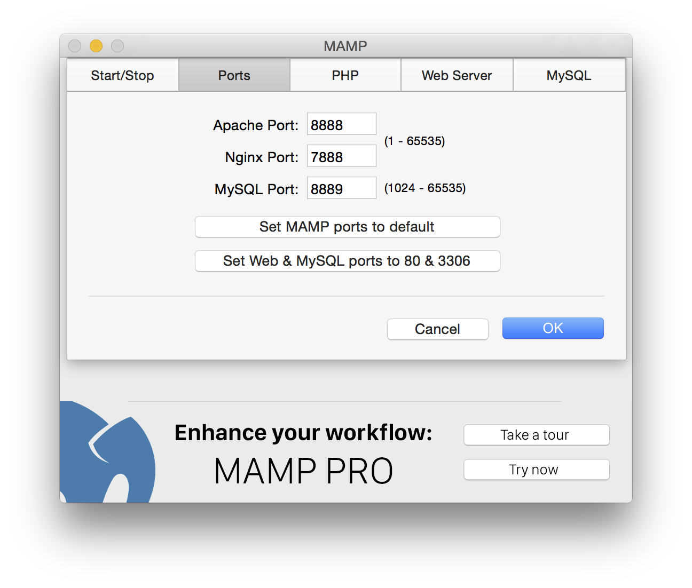

FAQ
MAMPに含まれるプログラムのバージョン
- Apache 2.2.31
- Nginx 1.11.4
- MySQL 5.6.35
- PHP 5.4.45, 5.5.38, 5.6.30, 7.0.15 & 7.1.1
- APC 3.1.13/APCu 4.0.11 & 5.1.7
- eAccelerator 0.9.6.1
- XCache 1.2.2 & 3.2.0
- Xdebug 2.2.7, 2.4.1 & 2.5.0
- Perl 5.24.0
- mod_perl 2.0.9
- Python 2.7.13
- mod_wsgi 3.5
- mod_python 3.5.0
- Ruby (with Rails) 2.3.3 (4.2.7)
- phpMyAdmin 4.6.5.2
- phpLiteAdmin 1.9.6
- SQLiteManager 1.2.4
- Freetype 2.6.5
- OpenSSL 1.0.2j
- t1lib 5.1.2
- curl 7.52.1
- jpeg 9b
- libpng 1.6.27
- tiff 4.0.6
- Ghostscript 9.20
- ImageMagick 6.9.6-2
- Imagick 3.1.2 & 3.4.3RC1
- gd 2.2.3
- zlib 1.2.8
- ICU 56.1 (Unicode 8.0)
- libxml2 2.8.0
- libxslt 1.1.28
- gettext 0.19.6
- libidn 1.17
- iconv 1.14
- mcrypt 2.5.8
- OAuth 1.2.3 & 2.0.2
- YAZ 5.16.0 & PHP/YAZ 1.2.0
MySQLデータベースのパスワードを変更したい
ターミナルを起動して以下のように入力します。/Applications/MAMP/Library/bin/mysqladmin -u root -p password <NEWPASSWORD><NEWPASSWORD>には変更後のパスワードを入力してください。
変更後、MAMP上で動作しているphpMyAdminやその他のスクリプトのパスワードも変更しなければなりません。 phpMyAdminのパスワードは、 /Applications/MAMP/bin/phpMyAdmin/config.inc.php を書き換える事で変更できます。
Apache、Nginx や MySQL のポートを変更したい
MAMPの使用するポートは、環境設定から変更できます。

HTML や PHP ファイルはどこに入れればいいか
標準では、HTMLやPHPファイルは /Applications/MAMP/htdocs 内に入れる必要があります。このフォルダは "Document Root" と呼ばれます。MAMPの Document Root は、環境設定から変更できます。
なぜMAMPは起動時や終了時にパスワードを要求するのか
Apache の使用ポートを 1024 より小さい数字に設定していませんか？ Mac OS X のようなUNIX環境下では、1024より小さい番号のポートでIPサービスを開始するには root 権限が必要です。